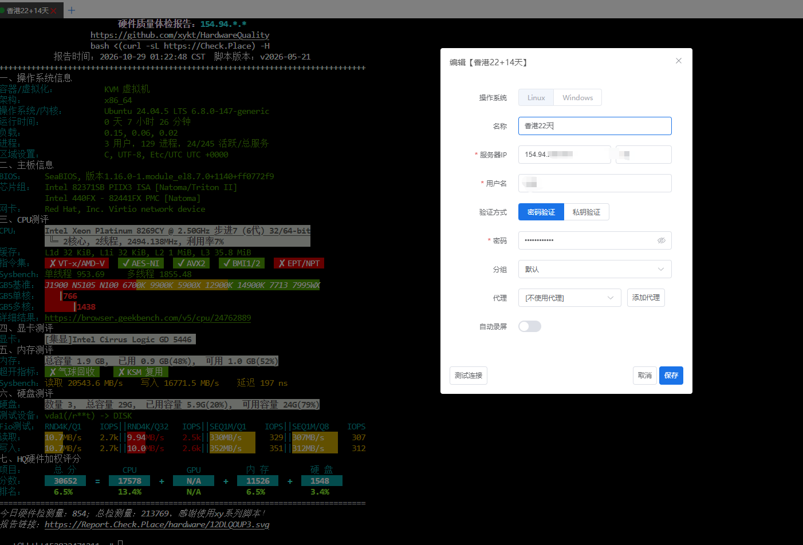

本站一直在做云服务器的价格与性价比评测，所以这次的机会就很应景了——慈云数据目前提供免费云服务器申请，完成平台任务（比如发布一篇真实的使用体验文章）还能获得 7～14 天的续期时长，符合要求可持续参与。翻译一下：这不是"永久白嫖"，而是"做任务续命"，但对想零成本练手的人来说已经相当友好。
作为一个测评博主，我第一时间申请了一台香港节点，用了几天，把配置、跑分、建站过程和真实感受全部记录在这篇文章里，供大家参考。
一、申请与开通：几分钟拿到手
流程不复杂：注册账号 → 进入控制台申请免费云服务器 → 选择机房和配置 → 提交。我选的是香港机房，提交后很快就在控制台里看到了自己的机器，拿到独立 IPv4 和 root 密码，直接 SSH 就能连上，不需要提工单等人工开通，这点体验不错。
续期机制也说一下：完成平台指定任务（如在 CSDN、知乎、博客园或个人博客等公开平台发布真实使用体验文章）可获得 7 天使用时长，符合活动要求可持续参与续期。规则写得明明白白，属于" transparent 的免费"，不是先甜后坑那种。
二、系统安装与配置一览
系统安装是在面板里完成的：镜像列表里有 Ubuntu、Debian、CentOS 等常见发行版，我选了 Ubuntu 24.04 LTS，一键重装几十秒完成，全程无感。装好后的系统是 Ubuntu 24.04.5 LTS（内核 6.8.0-147-generic），属于目前最新的 LTS 大版本，软件源和兼容性都不用操心。
| 项目 | 参数（实测截图可查） |
|---|---|
| 机房位置 | 香港（免备案，国内访问友好） |
| 虚拟化架构 | KVM 完整虚拟化（非 LXC / OpenVZ） |
| CPU | Intel Xeon Platinum 8269CY @ 2.50GHz |
| vCPU / 内存 | 2 线程 / 2 GB（系统可见 1.9 GiB） |
| 系统盘 | 25 GB SSD |
| 操作系统 | Ubuntu 24.04.5 LTS |
| 网络 | 独立 IPv4 |
对入门机来说，KVM + 独立 IPv4 是两个关键点：前者意味着内核可玩性完整（BBR、Docker 都没问题），后者省去了 NAT 共享机一堆端口映射的麻烦。
三、硬件体检与跑分实测
我在这台机器上跑了 Yx 系列硬件体检脚本，完整报告如下（IP 与账号信息已脱敏）：

拆开来看几个关键数据：
- CPU：sysbench 单线程 953.69 events/s，双线程 1855.48 events/s，Geekbench 5 单核 1766 分，多核 1438 分；
- 内存：sysbench 读取 20543 MB/s、写入 16771 MB/s，延迟 197ns，支持气球回收；
- 磁盘：4K 随机读写约 10 MB/s（2500～2700 IOPS），1M 顺序读写 300～350 MB/s，是 SSD 没跑了；
- 综合得分：30652（CPU 17578 / 内存 11526 / 硬盘 548）；
- 指令集：AES-NI、AVX2、BMI1/2 可用；VT-x/AMD-V 与 EPT/NPT 被宿主禁用。
怎么理解这套成绩？8269CY 是 Xeon 里的老将，单核性能中规中矩；2 线程 + 2G 内存的组合决定了它就是一台入门级共享型 VPS。4K 随机 IO 一般，跑高并发数据库会吃力。另外 VT-x 被禁用意味着不能嵌套虚拟化（在里面再开 KVM 虚拟机不行），但 Docker 容器不受影响。这个水平放在"免费"的语境下，我认为是完全合格的。
四、建站实战：5 分钟起一个 Nginx 站点
空跑分不算真本事，直接上手建站。Ubuntu 24.04 下装 Nginx 一条命令的事：
apt update -y
apt install nginx -y
systemctl enable --now nginx
# 放一个测试首页
echo "Hello, ciyundata!" > /var/www/html/index.html然后在慈云数据的控制台安全组里放行 80 / 443 端口，浏览器输入服务器 IP，页面就出来了。如果要绑自己的域名，两步：
- 在域名解析面板添加 A 记录指向服务器 IP（子域名也可以用 CNAME）；
- 用 certbot 一键签发 Let's Encrypt 免费证书：
apt install certbot python3-certbot-nginx -y
certbot --nginx -d yourdomain.com2G 内存在这套流程里绰绰有余：Nginx 常驻内存几十 MB，剩下的空间足够再挂一个 Uptime-Kuma 探针、一个静态博客或者跑跑脚本。作为个人建站学习机，这个配置刚好够用又不浪费。
五、网络体验
香港机房对国内用户天然友好。我这几天 SSH 上去操作全程流畅，没有明显卡顿和丢包；跑测速脚本时连接也比较稳定。不同地区、不同运营商到香港节点的延迟差异较大，我就不放具体数字误导大家了，感兴趣的朋友开通后自行 ping 一下更直观。免备案这一点，对想快速上线的个人站来说是实打实的省事。
六、客观评价：优点与槽点
优点
- ✓ 真·免费，任务续期规则透明（发布体验文即可续 7 天，可持续参与），不玩套路；
- ✓ KVM 架构 + 独立 IPv4，比同价位常见的 NAT 共享型小鸡良心不少；
- ✓ 镜像一键重装、控制台功能齐全，开通全程无人工等待；
- ✓ 香港节点免备案，国内访问体验好。
槽点（照实说）
- ✗ 配置就是入门级：2 线程 + 2G 内存 + 25G 盘，重负载应用别想；
- ✗ 4K 随机 IO 一般，高并发数据库场景吃力；
- ✗ VT-x/EPT 被禁用，玩不了嵌套虚拟化；
- ✗ 免费资源存在规则变动或被回收的可能，重要数据请务必自行备份。
七、总结
如果你正在找一台零成本的练手机——学 Linux、搭博客、跑脚本、挂探针——慈云数据这台免费 VPS 值得一试：开通省心、性能够用、香港线路友好，配合任务续期机制，长期白嫖一台入门机是完全现实的。当然，配置摆在那里，正式的生产业务还是那句话：老老实实上付费机。
最后再次注明：本文所测试的服务器由慈云数据（www.ciyundata.com）免费提供，以上内容为本人真实使用体验，包含客观存在的缺点，未收取任何费用或返佣。